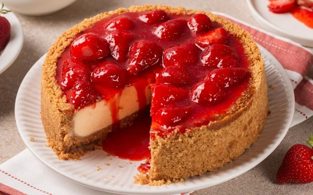
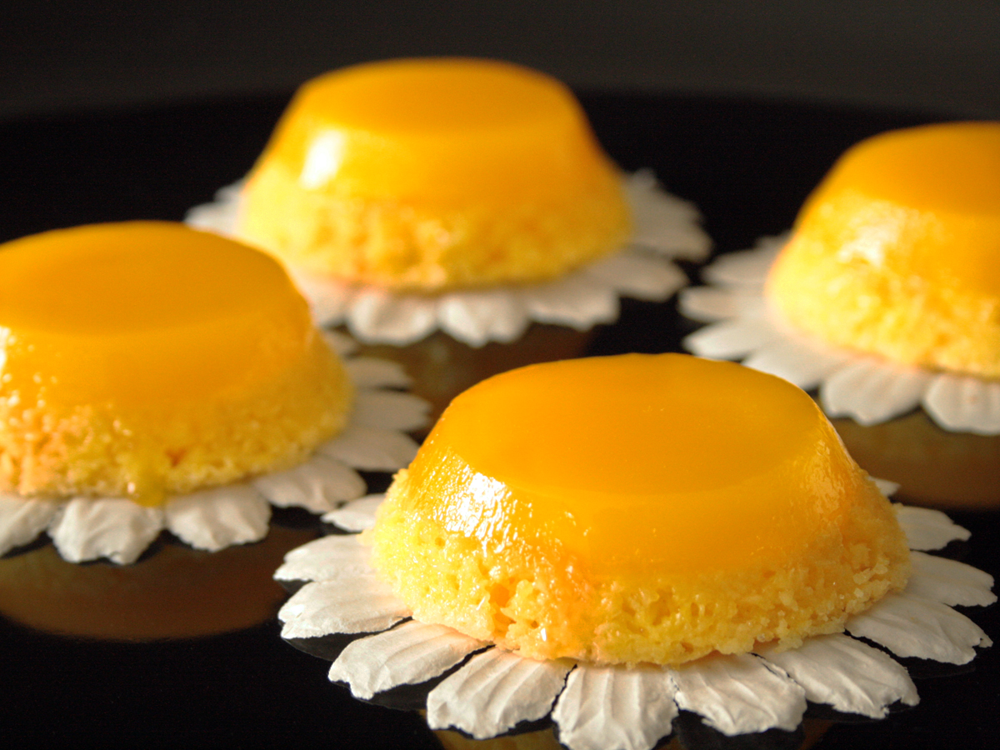
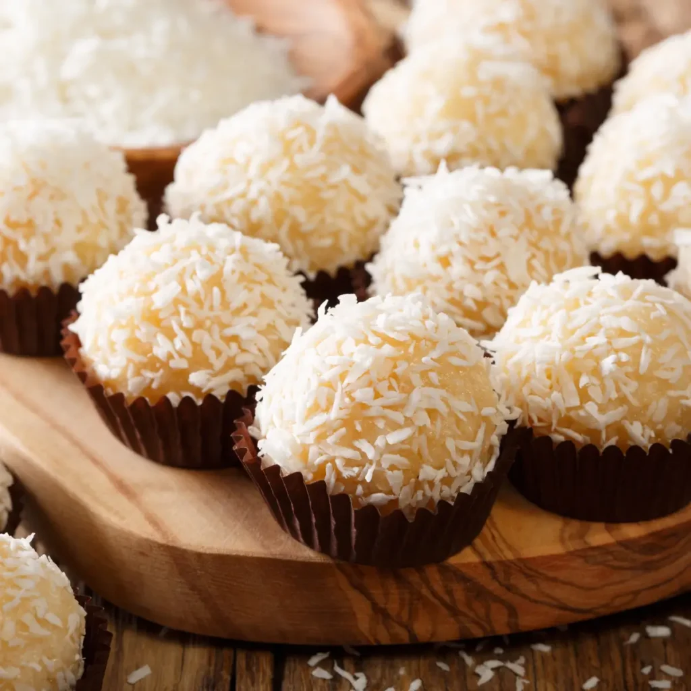

Brigadeiro
Ingredientes:
- 1 leite condensado
- 2 colheres de chocolate
- 1 colher de manteiga
Modo de preparo:
Em uma panela, misture todos os ingredientes. Leve ao fogo baixo e mexa sem parar até que a massa desgrude totalmente do fundo. Deixe esfriar, unte as mãos com manteiga e molde as bolinhas.

Pudim
Ingredientes:
- 1 leite condensado
- 3 ovos
- 500ml de leite
Modo de preparo:
Bata todos os ingredientes no liquidificador por cerca de 3 minutos até ficar homogêneo. Despeje a mistura em uma forma caramelizada com açúcar. Asse em forno preaquecido a 180°C, em banho-maria, por aproximadamente 1 hora.

Bolo de Chocolate
Ingredientes:
- Farinha
- Chocolate em pó
- Leite
Modo de preparo:
Em uma tigela, misture a farinha e o chocolate em pó. Adicione o leite aos poucos, mexendo bem até obter uma massa lisa. Despeje em uma forma untada e asse em forno médio (180°C) por cerca de 40 minutos.

Mousse de Maracujá
Ingredientes:
- Leite condensado
- Creme de leite
- Suco de maracujá
Modo de preparo:
Coloque o leite condensado, o creme de leite e o suco concentrado de maracujá no liquidificador. Bata na velocidade máxima por 5 minutos até obter uma consistência bem firme e aerada. Despeje em uma travessa e leve à geladeira por pelo menos 4 horas.

Cheesecake
Ingredientes:
- Cream cheese
- Biscoito
- Manteiga
Modo de preparo:
Triture os biscoitos e misture com a manteiga derretida para forrar o fundo de uma forma. Bata o cream cheese até ficar cremoso e espalhe sobre a base de biscoitos. Leve à geladeira por 6 horas antes de desenformar e servir com sua calda favorita.

Pavê Tradicional
Ingredientes:
- 1 pacote de biscoito maisena
- 1 lata de leite condensado
- 1 lata de creme de leite
Modo de preparo:
Leve o leite condensado ao fogo mexendo até engrossar levemente e deixe esfriar. Em um refratário, intercale camadas de biscoitos levemente umedecidos com camadas do creme. Finalize cobrindo com o creme de leite e leve à geladeira por 4 horas.

Brownie
Ingredientes:
- 200g de chocolate em pó
- 1 xícara de açúcar
- 4 colheres de manteiga
Modo de preparo:
Derreta a manteiga e misture bem com o chocolate em pó e o açúcar. Adicione os ovos um a um e por fim a farinha, mexendo até incorporar. Despeje em uma forma retangular e asse a 180°C por 25 minutos, mantendo o centro úmido.

Quindim
Ingredientes:
- 10 gemas de ovo
- 1 xícara de açúcar
- 100g de coco ralado
Modo de preparo:
Passe as gemas por uma peneira fina para remover a película. Adicione o açúcar e o coco ralado, misturando delicadamente. Despeje a massa em forminhas untadas com manteiga e açúcar. Asse em banho-maria no forno a 180°C por 45 minutos até dourar.

Beijinho
Ingredientes:
- 1 leite condensado
- 100g de coco ralado
- 1 colher de manteiga
Modo de preparo:
Coloque todos os ingredientes em uma panela e leve ao fogo médio. Mexa constantemente até que a mistura comece a desgrudar do fundo e das laterais da panela. Transfira para um prato, espere esfriar completamente, enrole e passe no coco ralado.

Petit Gâteau
Ingredientes:
- 200g de chocolate amargo
- 2 colheres de manteiga
- 2 ovos e 2 gemas
Modo de preparo:
Derreta o chocolate com a manteiga no micro-ondas. À parte, bata os ovos, as gemas e o açúcar até esbranquiçar e misture ao chocolate líquido. Adicione um pouco de farinha, distribua em forminhas e asse a 200°C por apenas 8 minutos.

Morango com Chantilly
Ingredientes:
- 2 caixas de morangos frescos
- 200ml de creme de leite fresco
- 3 colheres de açúcar de confeiteiro
Modo de preparo:
Lave bem os morangos e corte-os ao meio. Na batedeira, bata o creme de leite bem gelado com o açúcar até atingir o ponto de chantilly firme. Monte em taças alternando os morangos e o creme.

Palha Italiana
Ingredientes:
- 1 lata de leite condensado
- 1 pacote de biscoito maisena
- 3 colheres de chocolate em pó
Modo de preparo:
Faça um brigadeiro tradicional com o leite condensado, o chocolate e uma colher de manteiga. Assim que desligar o fogo, misture os biscoitos picados. Despeje em uma forma untada, deixe esfriar, corte em quadrados e passe no açúcar.